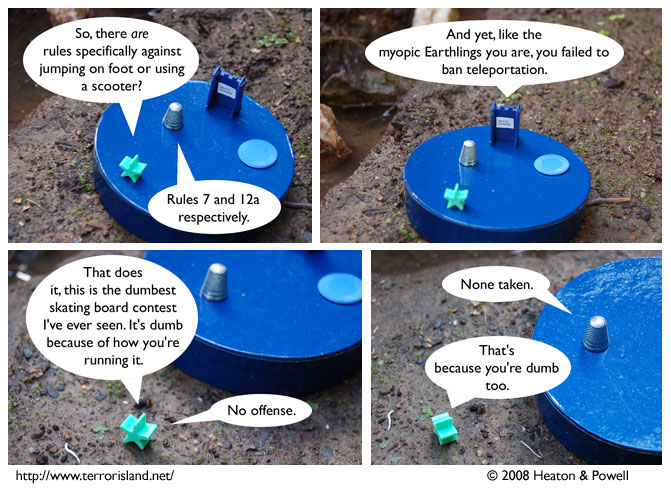

Strip #257
— Friday, February 1, 2008
You know, Sue kind of has a point here.
Notes, Thoughts, &c.
Ben’s Notes
Sue doesn’t seem to like the skating board contest for some reason.
Lewis’s Notes
Just to make it clear to everyone exactly what is up with the rules, rule 7 reads “If the entrant jumps the river on foot, he or she will be disqualified for not using a skating board” and rule 12a reads “if the entrant jumps the river on a scooter, he or she will be disqualified for not using a skating board.” 12b-q rule out various other vehicles one might attempt to jump the river on. Since there is no rule saying “If the entrant teleports across the river, the entrant will be disqualified for not using a skating board” Ned cannot be disqualified for failure to use a skating board.